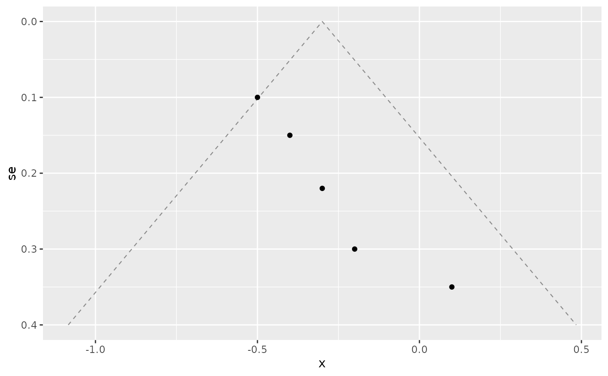

Pseudo-confidence-interval contours for a funnel plot
Source:R/geom-funnel.R
geom_funnel_contour.Rdgeom_funnel_contour() draws the funnel-shaped pseudo confidence interval(s)
around a reference effect. For a study with standard error se, the expected
effect under no bias lies within centre +/- z * se, so the contours are
straight lines fanning out from the apex at se = 0. On a funnel plot with a
reversed standard-error axis they form the familiar funnel.
Usage
geom_funnel_contour(
centre,
se_max,
level = 0.95,
...,
colour = "grey55",
linetype = "dashed",
linewidth = 0.4,
alpha = NA
)Arguments
- centre
Reference effect (usually the pooled estimate) the funnel is centred on, on the analysis scale.
- se_max
Largest standard error the contours should reach (the bottom of the funnel).
- level
Confidence level(s) for the contour(s), e.g.
0.95orc(0.95, 0.99). Default0.95.- ...
Other arguments passed on to
ggplot2::layer().- colour, linetype, linewidth, alpha
Line appearance.
Details
The layer builds its own data from centre, se_max, and level, so it does
not use the plot's data; add it to a plot that maps the effect to x and the
standard error to y.
Examples
library(ggplot2)
studies <- data.frame(
estimate = c(-0.5, -0.2, -0.4, 0.1, -0.3),
se = c(0.10, 0.30, 0.15, 0.35, 0.22)
)
ggplot(studies, aes(x = estimate, y = se)) +
geom_funnel_contour(centre = -0.3, se_max = 0.4) +
geom_point() +
scale_y_reverse()
